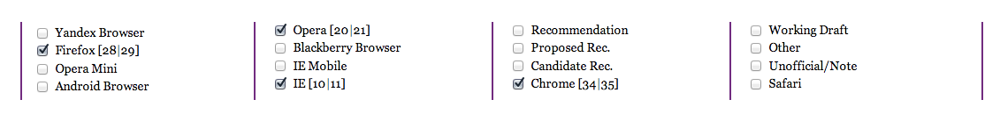

JS/HTML/CSS
- Реализуйте блок липучку, который умеет прилипать к верху/низу страницы.
Пример работы блока на видео.
- Верхняя липучка:
- скроллим вниз: как только липучка достигает верхней границы окна – она прилипает;
- скроллим вверх: как только достигнем ее исходного местоположения – она отлипает;
- Нижняя липучка:
- как только ее исходное местоположение не попадает в видимую область окна — она прилипает книзу страницы;
- как только ее исходное местоположение попадает в видимую область окна — она отлипает;
- Липучка должна реагировать на:
- изменение размеров окна;
- изменение высоты документа и высоты собственного контента. Контент может изменяться
динамически — это означает, что тот блок, который меняет контент не должен сообщать об этом липучке,
так таких блоков может быть много;
- Реализация с помощью jQuery, без плагинов;
- Поддержка браузеров: Internet Explorer 8,9 и последние версии Firefox, Opera, Chrome;
CSS/HTML
- Приведите следующий код к виду ниже
- Количество строк не ограничено;
- Количество ячеек [2|3|4] в зависимости от размера экрана;
- При уменьшении экрана текст лейбла не переносится и не наезжает на соседний;
- Только CSS/HTML (в HTML добавляем как можно меньше);
- Должно работать в последнией/предпоследней версиях Firefox, Opera, Chrome, Internet Explorer;
